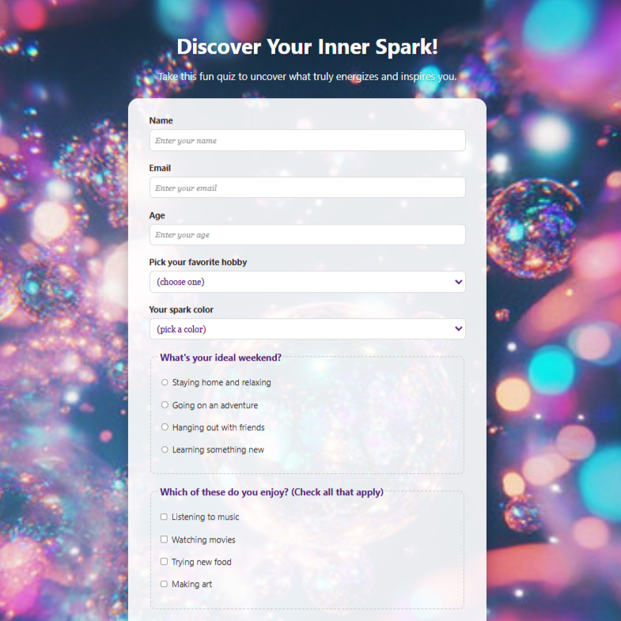
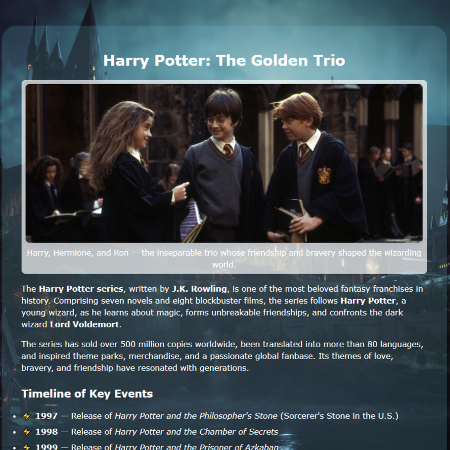
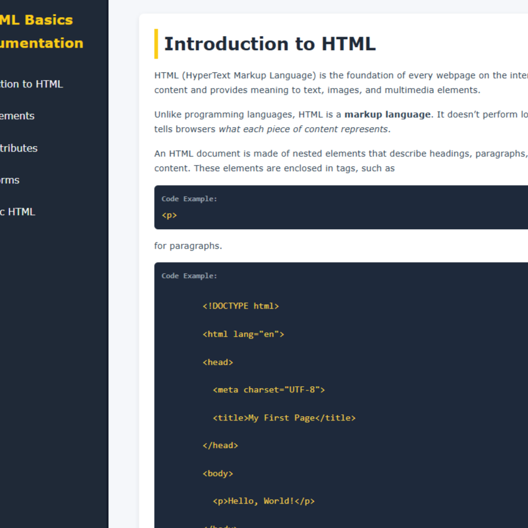
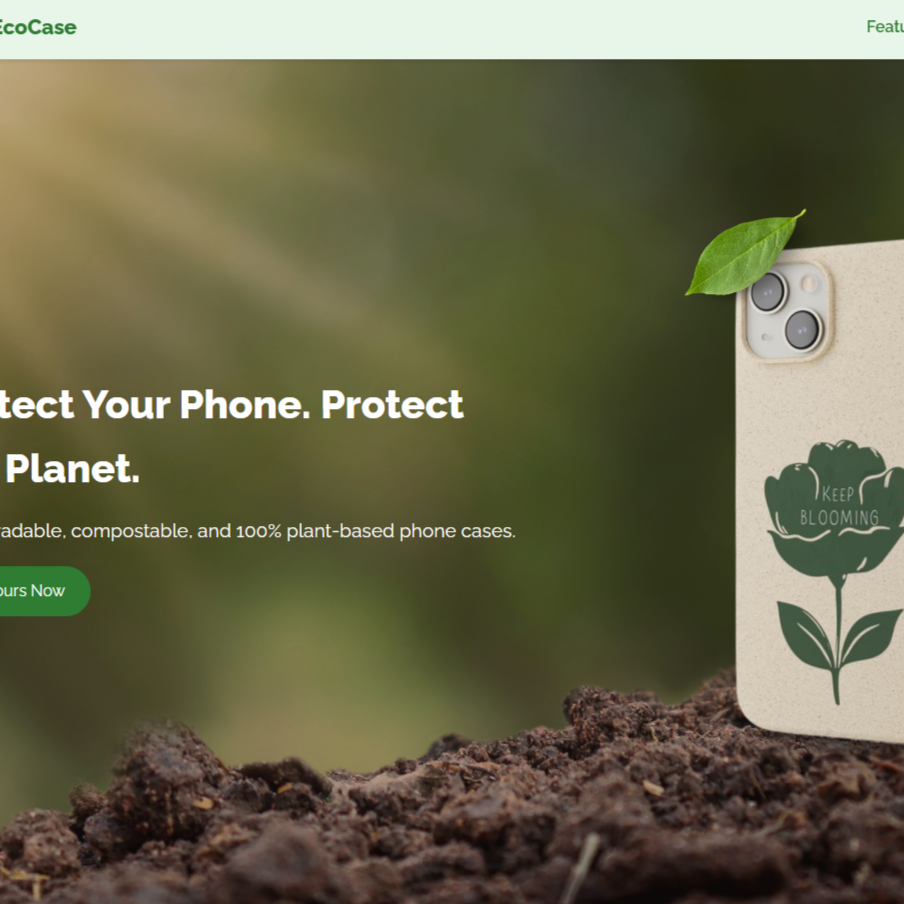
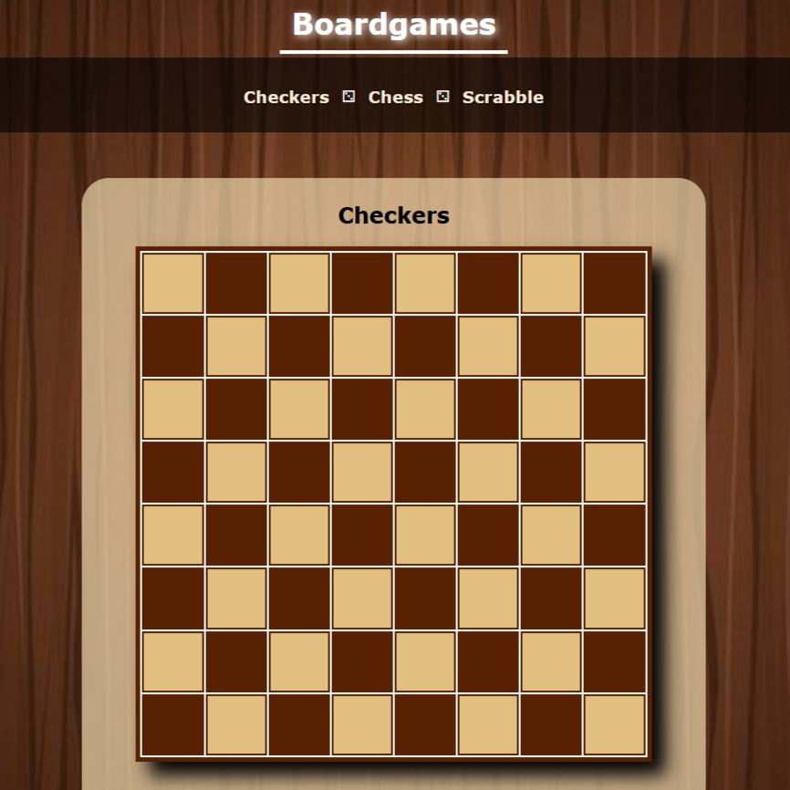

Front-End Developer focused on building elegant, responsive web experiences.
View My Work
A vibrant, personality-themed quiz form with a dreamy gradient background, interactive questions, and a soft, transparent design to help users discover what inspires them.
View Project
A responsive, magical tribute page celebrating the Harry Potter series with detailed information, a timeline of key events, and vibrant visuals.
View Project
A clean and modern technical documentation page that explains fundamental HTML concepts with detailed sections, examples, and an easy-to-navigate sidebar.
View Project
A modern, eco-focused product page highlighting biodegradable, plant-based phone cases with key features, sustainability story, pricing tiers, and an email signup.
View Project
A visually engaging webpage showcasing classic board games — Checkers, Chess, and Scrabble — with styled, playable boards and smooth navigation.
View ProjectA dynamic and personalized showcase of my academic projects, technical skills, certifications, and creative works — highlighting my growth, passion, and journey as a future tech professional.
View ProjectWhether you have a project idea or just want to say hi, I’d love to connect!
Visit My GitHub